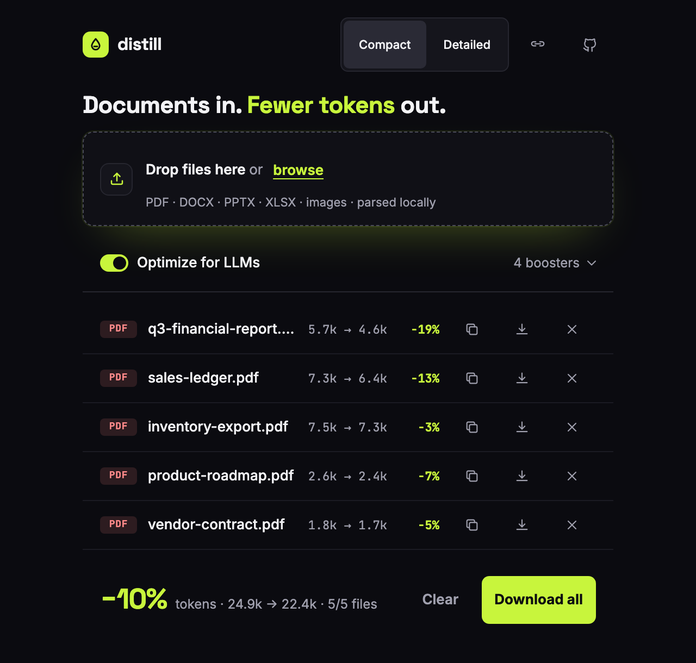
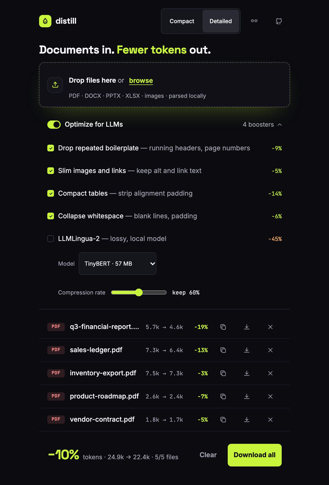
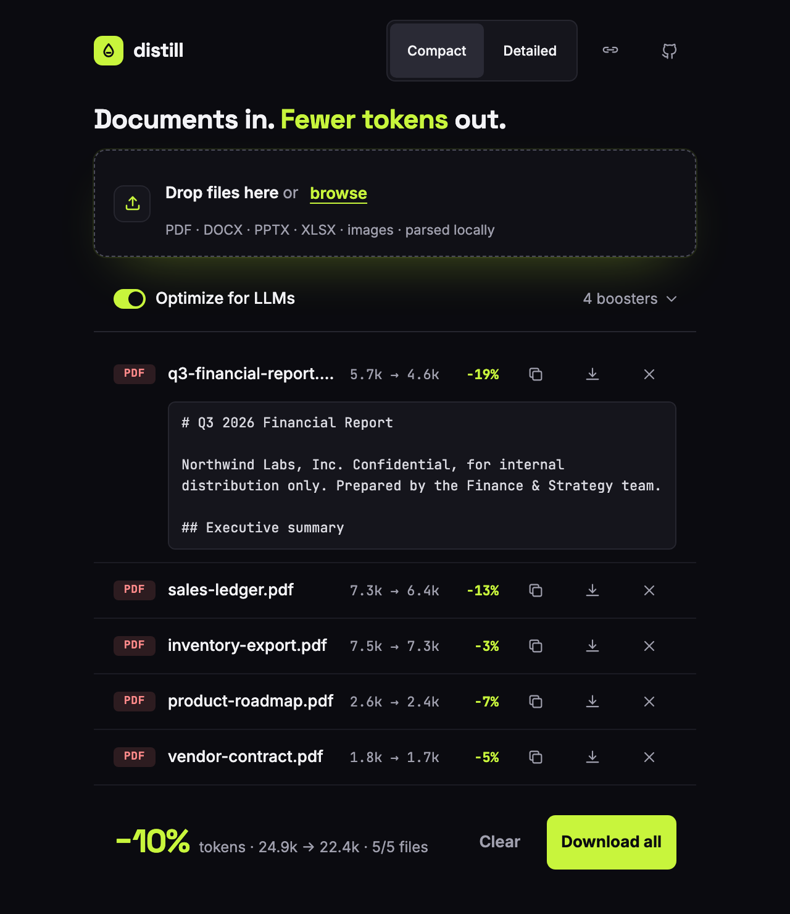

Open source · Apache-2.0 · 100% local
Documents in.
Fewer tokens out.
Turn PDFs, Office files and images into token-lean Markdown for your LLM. Lossless boosters drop the repeats, not the content.
npx distill-llm
Opens a local app at 127.0.0.1:4321. Nothing leaves your machine.
How it works
Four small steps. All on your machine.
- 01
Drop
PDF, DOCX, PPTX, XLSX, ODF or an image.
- 02
LiteParse
Parses the layout into Markdown, with OCR for scans.
- 03
Boosters
Small, deterministic passes trim boilerplate, link targets and whitespace.
- 04
Fewer tokens
Copy or download lean Markdown, with the count before and after.
The app
See the saving before you paste.
Every file shows tokens before and after. Switch to the detailed view to toggle each booster and read the Markdown.



Measured
What Claude actually pays to read your PDFs.
We counted the input tokens Claude needs for the five demo PDFs, once as the raw PDF and once as distill's Markdown. Your files will differ: headers, footers and links repeat more in some documents than in others.
raw PDF vs distill Markdown, 5 PDFs
Measured with Anthropic's token counting API (claude-sonnet-5-5) on 5 demo PDFs. Your files will differ.
Lossless boosters, on top
o200k_base, 5 of 5 files
LiteParse already returns fairly clean Markdown, so lossless savings are typically modest and bigger on table- and link-heavy documents. LLMLingua-2 (optional, lossy) goes further.
Boosters
Formatting goes. Content stays.
Each booster is a pure, idempotent function over the Markdown, run in a fixed order. None of them touches code blocks or front-matter. The first four are on by default.
| Booster | What it does | Loss |
|---|---|---|
| Drop repeated boilerplate | Removes repeated running headers and footers and bare page indicators such as Page 3 of 12, keeping the first. Short repeated lines are never removed. | No information lost |
| Slim images and links |  becomes [alt] and [text](url) becomes text. | Drops image paths and URLs |
| Compact tables | Removes alignment padding from GFM tables. | None |
| Collapse whitespace | Collapses blank-line runs, trailing spaces and double spaces outside code. | None |
| LLMLingua-2 | A local model removes low-value words. Optional, experimental, off by default. | Lossy |
Use it everywhere
One engine, seven doors.
The same local pipeline behind a web app, a desktop app, a container, a CLI, an MCP server and hooks for your coding agent.
Start the local web app. It opens at http://127.0.0.1:4321.
npx distill-llmInstallers for macOS, Windows and Linux are on GitHub Releases, in a lite and a full variant (full bundles the LLMLingua-2 runtime). Installers are not signed yet, so the OS warns on first launch.
The image bundles LibreOffice and OCR data, so every format works out of the box.
docker run --rm -p 4321:4321 ghcr.io/nievesjesus/distillConvert files from the terminal. Also --json, --stdout, --boosters ws,tables and --no-optimize.
npx distill-llm convert report.pdf --out md/An MCP server any agent can call. Tools: distill_file, distill_files, distill_capabilities. Use distill-llm mcp --http for remote clients.
claude mcp add distill -- npx -y distill-llm mcpOr add it to any client's config:
{"mcpServers":{"distill":{"command":"npx","args":["-y","distill-llm","mcp"]}}}A Claude Code PreToolUse hook on Read makes the agent read the distilled Markdown instead of the binary. Only PDF and Office files are converted, images are left alone, and a failure never blocks the read.
npm i -g distill-llm
distill-llm hooks install --claudeThe same idea as an OpenCode plugin. Only PDF and Office files are converted, images are left alone, and a failure never blocks the read.
npm i -g distill-llm
distill-llm hooks install --opencodePrivacy
Your documents never leave.
Parsed locally
Files are parsed on your machine and deleted from the temp directory after parsing.
No telemetry
No analytics, no tracking. This page loads no third-party scripts either.
No CDN
Fonts and assets are bundled, in the app and on this site.
Loopback by default
The server only listens on 127.0.0.1 unless you say otherwise.
Up to three one-time downloads can happen, each only when you need it: OCR language data on first image OCR (about 15 MB, bundled in Docker and the desktop app), and, if you enable LLMLingua-2, its runtime from npm and its model (about 57 MB) from Hugging Face.
FAQ
Quick answers.
Is it free?
Yes. distill is open source under the Apache-2.0 license.
Does anything leave my machine?
No. Files are parsed locally, with no telemetry and no CDN. The only network use is the optional one-time downloads described above (OCR data, and the LLMLingua-2 runtime and model if you turn it on).
Which formats are supported?
PDF and images (PNG, JPG, TIFF, WebP, with built-in OCR) need nothing else. DOCX, PPTX, XLSX and ODF need LibreOffice on your PATH, which the Docker image already includes. Parsing quality is whatever LiteParse gives you, and it varies on dense tables and complex scans.
How are tokens counted?
With the o200k_base encoding, in your browser. Other models, such as Claude or Gemini, tokenize differently, so absolute counts are approximate. The percentage saved is comparable across tokenizers.
Is LLMLingua-2 lossy?
Yes. A local model removes low-value words, so it is marked as lossy, experimental and off by default. The default boosters drop only formatting, repeats and link targets.
Documents in. Fewer tokens out.
npx distill-llm